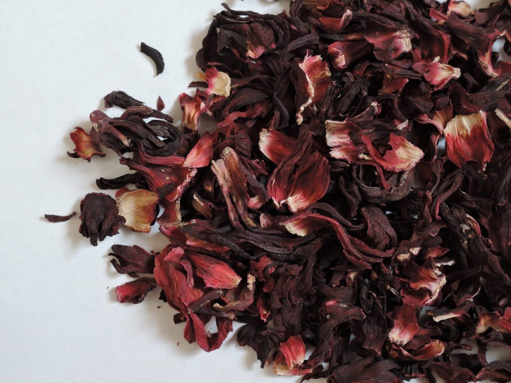

Before I proceed some of you might wonder what is hibiscuss and how does it look like, no worries you can find an image of it below and it's called zobo in hausa.
step1 blend your cocumber and set aside.
Note: cocumber gives it a unique taste and also serves as flavor.
step2 Wash your hibiscuss with plain water, transfer the hibiscuss into a clean pot and add cinnamon, ginger, cloves and mint leaves. Add a reasonable amount of water then allow it to boil for 6-10mins and add your blended cocumber and let it cool. Sieve it and add sugar to your taste, you can use sugar syrup if you desire and dilute with water to your satisfaction. You can add ice if you prefer to drink it cold.
For more drink recipes follow me on any of my social media handles below
instagram
faceebook
telegram
whatsapp